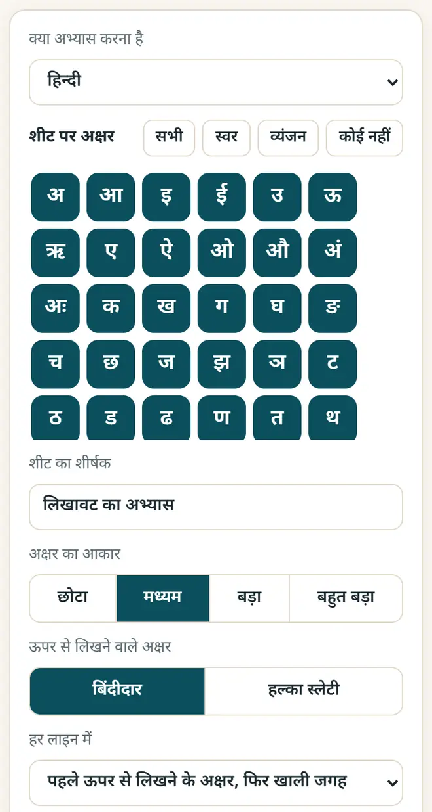
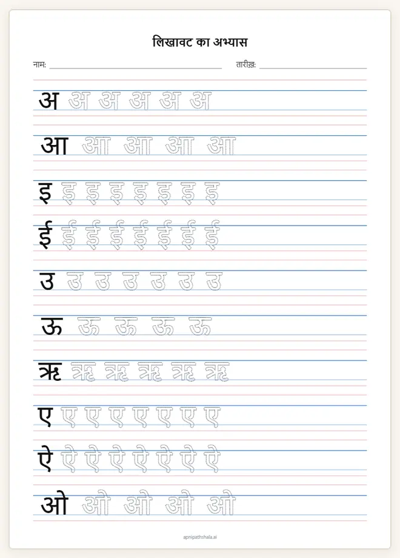

बच्चों के लिए लिखावट अभ्यास की वर्कशीट: मुफ़्त वर्णमाला ट्रेसिंग शीट
इंटरनेट पर ज़्यादातर ट्रेसिंग शीट सिर्फ़ अंग्रेज़ी में मिलती हैं, या लॉगिन माँगती हैं। यहाँ आप एक मिनट में अपनी शीट बना सकते हैं: अंग्रेज़ी के अक्षर, गिनती, हिंदी वर्णमाला या कोई और भारतीय वर्णमाला, या बच्चे का नाम, छोटे हाथों के लायक़ आकार में।
छोटा जवाब
लिखावट अभ्यास शीट खोलें। “क्या अभ्यास करना है” में अंग्रेज़ी के अक्षर, गिनती, कोई भारतीय वर्णमाला या “अपने शब्द या नाम” चुनें। अक्षरों पर टैप करके सिर्फ़ आज के अक्षर रखें, “अक्षर का आकार” चुनें और A4 पर छापने या PDF सेव करने के लिए “प्रिंट करें / PDF सेव करें” दबाएँ।
5 स्टेप में ट्रेसिंग शीट
-
चुनें कि क्या अभ्यास करना है
लिखावट अभ्यास शीट खोलें। “क्या अभ्यास करना है” में “अंग्रेज़ी: बड़े अक्षर (A B C)”, “अंग्रेज़ी: छोटे अक्षर (a b c)” या “गिनती 0 से 9” चुनें, या हिंदी, मराठी, बांग्ला, गुजराती, पंजाबी, ओड़िया, तमिल, तेलुगु, कन्नड़, मलयालम या उर्दू के अक्षर। झलक तुरंत बदल जाती है।
-
अक्षर चुनें
किसी अक्षर पर टैप करके उसे शीट से हटाएँ या वापस लाएँ। “सभी” और “कोई नहीं” से काम जल्दी होता है, और ज़्यादातर भारतीय वर्णमालाओं में “स्वर” या “व्यंजन” भी चुन सकते हैं। एक दिन के लिए चार-पाँच अक्षर काफ़ी हैं।

वर्णमाला चुनें और जो अक्षर चाहिए उन पर टैप करें। -
या बच्चे का नाम लिखें
“अपने शब्द या नाम” चुनें और हर लाइन में एक शब्द या नाम लिखें। बच्चों को सबसे पहले अपना नाम लिखना अच्छा लगता है।
-
आकार और स्टाइल तय करें
“अक्षर का आकार” में छोटे बच्चों के लिए “बहुत बड़ा” से शुरू करें। ऊपर से लिखने के लिए “बिंदीदार” या “हल्का स्लेटी” अक्षर चुनें, और यह भी कि लाइन में आख़िर तक अक्षर हों या ख़ुद लिखने के लिए ख़ाली जगह। “अक्षर जहाँ से शुरू होता है वहाँ बिंदी दिखाएँ” अंग्रेज़ी के अक्षरों और अंकों में मदद करता है। “नाम और तारीख़ की लाइन जोड़ें” से बच्चे के नाम और तारीख़ की जगह मिलती है।
-
प्रिंट करें या PDF सेव करें
“प्रिंट करें / PDF सेव करें” दबाएँ और A4 काग़ज़ चुनें। शीट रखने के लिए, या WhatsApp पर भेजकर दुकान से छपवाने के लिए, प्रिंटर की जगह Save as PDF चुनें।

ट्रेसिंग शीट, A4 पर प्रिंट के लिए तैयार।
लिखावट के अभ्यास के सुझाव
- थोड़ा-थोड़ा और रोज़ करना सबसे अच्छा है: एक लंबी बैठक से रोज़ के 10 से 15 मिनट बेहतर हैं।
- हर लाइन का पहला अक्षर नमूना है। बच्चा पहले हल्के अक्षरों के ऊपर लिखता है, फिर ख़ाली जगह में ख़ुद लिखता है।
- शुरुआत बहुत बड़े अक्षरों से करें। जैसे-जैसे बच्चा सीखे, अक्षर छोटे करें और लाइनें बढ़ाएँ। अंग्रेज़ी की शीट में चार लाइनें होती हैं; भारतीय लिपियों में उस लिपि के हिसाब की लाइनें आती हैं।
- पेंसिल और काग़ज़ से पहले छोटे बच्चों को बड़े अक्षर उँगली से, रेत में या स्लेट पर बनाने दें। देखें कि बच्चा पेंसिल कैसे पकड़ता है, और उसकी मेहनत की तारीफ़ करें।
नए मुफ़्त टूल और हिंदी में AI के पाठ पाएँ
हमारी ईमेल लिस्ट से जुड़ें: नए मुफ़्त ऐप, नई गाइड और AI पर हिंदी वीडियो पाठ की जानकारी आपको मिलती रहेगी। कोई स्पैम नहीं।
सिर्फ़ वयस्कों (18+) के लिए। आप कभी भी नाम हटवा सकते हैं।
हम ये टूल क्यों सुझाते हैं
- सबके लिए मुफ़्त: न विज्ञापन, न साइन-अप, न कोई पेड प्लान।
- प्राइवेट: आपकी फ़ाइलें और जानकारी आपके अपने डिवाइस पर ही रहती हैं।
- फ़ोन, लैपटॉप या स्मार्टबोर्ड पर चलते हैं, और एक बार खुलने के बाद बिना इंटरनेट भी।
- हिंदी समेत 12 भाषाओं में।
वीडियो से सीखना पसंद है? हमारे YouTube चैनल पर AI और मुफ़्त टूल्स के हिंदी पाठ देखें।
अक्सर पूछे जाने वाले सवाल
क्या ये लिखावट की वर्कशीट मुफ़्त हैं?
हाँ। जितनी चाहें उतनी शीट बनाएँ और छापें। साइन-अप नहीं है और वॉटरमार्क भी नहीं।
क्या हिंदी वर्णमाला की ट्रेसिंग शीट बना सकते हैं?
हाँ। “क्या अभ्यास करना है” में हिंदी चुनें और स्वर (अ आ इ) या व्यंजन (क ख ग) चुनें। मराठी, बांग्ला, गुजराती, पंजाबी, ओड़िया, तमिल, तेलुगु, कन्नड़, मलयालम और उर्दू में भी ऐसे ही होता है।
क्या नाम लिखने की ट्रेसिंग शीट बना सकते हैं?
हाँ। “अपने शब्द या नाम” चुनें और बच्चे का नाम या कुछ शब्द लिखें, हर लाइन में एक।
ये शीट किस उम्र के बच्चों के लिए हैं?
उन बच्चों के लिए जो लिखना शुरू कर रहे हैं, मोटे तौर पर नर्सरी से कक्षा 2 तक, और उन बड़े बच्चों के लिए जो अपनी लिखावट सुधारना चाहते हैं। बच्चे के हिसाब से अक्षर का आकार चुनें।
दूसरे फ़ोन पर अक्षर थोड़े अलग क्यों दिखते हैं?
शीट आपके डिवाइस में पहले से मौजूद फ़ॉन्ट इस्तेमाल करती है, इसलिए अक्षरों की बनावट अलग-अलग डिवाइस पर थोड़ी बदल सकती है। छापने से पहले झलक देख लें।
काम की लगी?
इसे किसी दोस्त, साथियों या अपने स्कूल के WhatsApp ग्रुप में भेजें।